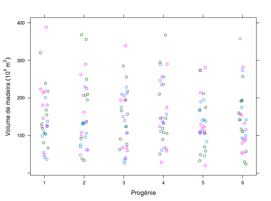

Pesquisa sobre avaliação de progênies de Eucaliptus camaldulensis, referente ao volume de madeira por árvore, cujos dados foram obtidos pela V. \& M. Florestal Ltda. Experimento realizado em blocos casualizados.
Um data.frame com 180 observações e 4 variáveis, em
que
progreptplantvolRAMALHO et al. (2005), Tabela 7.1, pág 102.
library(lattice) data(RamalhoTb7.1)#> Warning: data set ‘RamalhoTb7.1’ not foundstr(RamalhoTb7.1)#> 'data.frame': 180 obs. of 4 variables: #> $ prog : Factor w/ 10 levels "1","2","3","4",..: 1 2 3 4 5 6 7 8 9 10 ... #> $ rept : int 1 1 1 1 1 1 1 1 1 1 ... #> $ plant: int 1 1 1 1 1 1 1 1 1 1 ... #> $ vol : int 55 124 42 99 201 109 138 37 126 104 ...xtabs(~prog + rept, data = RamalhoTb7.1)#> rept #> prog 1 2 3 #> 1 6 6 6 #> 2 6 6 6 #> 3 6 6 6 #> 4 6 6 6 #> 5 6 6 6 #> 6 6 6 6 #> 7 6 6 6 #> 8 6 6 6 #> 9 6 6 6 #> 10 6 6 6xyplot(vol ~ plant, data = RamalhoTb7.1, jitter.x = TRUE, groups = rept, xlab = "Progênie", ylab = expression("Volume de madeira"~(10^{4}~m^{3})))